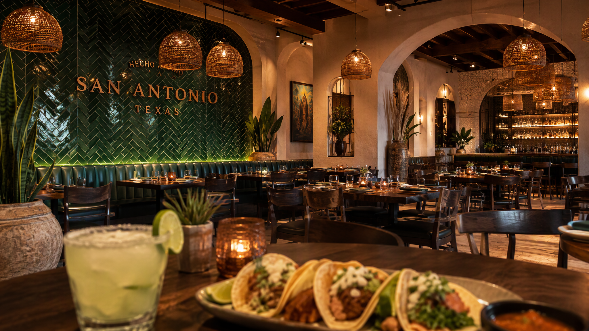

Prime Ribeye al Carbón
$48Mesquite-grilled Texas prime ribeye, chimichurri rojo, charred bone marrow.
At Casa Verde Cocina, we blend traditional Mexican heritage with modern culinary artistry. Every dish is crafted with the finest regional ingredients for an unforgettable dining experience.

We use the freshest local ingredients in every dish.
Hand-crafted traditional flavors elevated by modern culinary technique.
An exceptional curation of mezcals, tequilas, and pairing wines.
| Day | Hours |
|---|---|
| Monday | Closed |
| Tuesday | 11:00 – 21:00 |
| Wednesday | 11:00 – 21:00 |
| Thursday | 11:00 – 21:00 |
| Friday | 11:00 – 22:30 |
| Saturday | 11:00 – 22:30 |
| Sunday | 10:00 – 15:00 brunch |